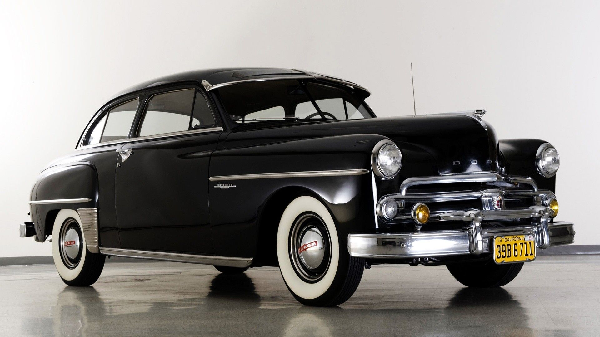

cars history
Cars came into global use during the 20th century, and developed economies depend on them. The year 1886 is regarded as the birth year of the modern car when German inventor Karl Benz patented his Benz Patent-Motorwagen. Cars became widely available in the early 20th century. One of the first cars accessible to the masses was the 1908 Model T, an American car manufactured by the Ford Motor Company. Cars were rapidly adopted in the US, where they replaced animal-drawn carriages and carts, but took much longer to be accepted in Western Europe and other parts of the world.
Cars have controls for driving, parking, passenger comfort, and a variety of lights. Over the decades, additional features and controls have been added to vehicles, making them progressively more complex, but also more reliable and easier to operate.[citation needed] These include rear-reversing cameras, air conditioning, navigation systems, and in-car entertainment. Most cars in use in the early 2020s are propelled by an internal combustion engine, fueled by the combustion of fossil fuels. Electric cars, which were invented early in the history of the car, became commercially available in the 2000s and are predicted to cost less to buy than gasoline cars before 2025. The transition from fossil fuels to electric cars features prominently in most climate change mitigation scenarios,such as Project Drawdown's 100 actionable solutions for climate change.
Cars are amazing invention
Somtiems we need to know who make the first car in the world.
It is an amazing thing and it is one of the most important invention.
first car in the world
The first working steam-powered vehicle was designed—and quite possibly built—by Ferdinand Verbiest, a Flemish member of a Jesuit mission in China around 1672. It was a 65-centimetre (26 in)-long scale-model toy for the Kangxi Emperor that was unable to carry a driver or a passenger. It is not known with certainty if Verbiest's model was successfully built or run.
Nicolas-Joseph Cugnot is widely credited with building the first full-scale, self-propelled mechanical vehicle or car in about 1769; he created a steam-powered tricycle.He also constructed two steam tractors for the French Army, one of which is preserved in the French National Conservatory of Arts and Crafts.His inventions were, however, handicapped by problems with water supply and maintaining steam pressure.[26] In 1801, Richard Trevithick built and demonstrated his Puffing Devil road locomotive, believed by many to be the first demonstration of a steam-powered road vehicle. It was unable to maintain sufficient steam pressure for long periods and was of little practical use.
The development of external combustion engines is detailed as part of the history of the car but often treated separately from the development of true cars. A variety of steam-powered road vehicles were used during the first part of the 19th century, including steam cars, steam buses, phaetons, and steam rollers. Sentiment against them led to the Locomotive Acts of 1865.
In 1807, Nicéphore Niépce and his brother Claude created what was probably the world's first internal combustion engine (which they called a Pyréolophore), but they chose to install it in a boat on the river Saone in France.Coincidentally, in 1807 the Swiss inventor François Isaac de Rivaz designed his own 'de Rivaz internal combustion engine' and used it to develop the world's first vehicle to be powered by such an engine. The Niépces' Pyréolophore was fuelled by a mixture of Lycopodium powder (dried spores of the Lycopodium plant), finely crushed coal dust and resin that were mixed with oil, whereas de Rivaz used a mixture of hydrogen and oxygen. Neither design was very successful, as was the case with others, such as Samuel Brown, Samuel Morey, and Etienne Lenoir with his hippomobile, who each produced vehicles (usually adapted carriages or carts) powered by internal combustion engines.
mass production
Large-scale, production-line manufacturing of affordable cars was started by Ransom Olds in 1901 at his Oldsmobile factory in Lansing, Michigan and based upon stationary assembly line techniques pioneered by Marc Isambard Brunel at the Portsmouth Block Mills, England, in 1802. The assembly line style of mass production and interchangeable parts had been pioneered in the U.S. by Thomas Blanchard in 1821, at the Springfield Armory in Springfield, Massachusetts. This concept was greatly expanded by Henry Ford, beginning in 1913 with the world's first moving assembly line for cars at the Highland Park Ford Plant.
As a result, Ford's cars came off the line in fifteen-minute intervals, much faster than previous methods, increasing productivity eightfold, while using less manpower (from 12.5-man-hours to 1 hour 33 minutes). It was so successful, paint became a bottleneck. Only Japan black would dry fast enough, forcing the company to drop the variety of colors available before 1913, until fast-drying Duco lacquer was developed in 1926. This is the source of Ford's apocryphal remark, "any color as long as it's black". In 1914, an assembly line worker could buy a Model T with four months' pay.
In the automotive industry, its success was dominating, and quickly spread worldwide seeing the founding of Ford France and Ford Britain in 1911, Ford Denmark 1923, Ford Germany 1925; in 1921, Citroen was the first native European manufacturer to adopt the production method. Soon, companies had to have assembly lines, or risk going broke; by 1930, 250 companies which did not, had disappeared.
Development of automotive technology was rapid, due in part to the hundreds of small manufacturers competing to gain the world's attention. Key developments included electric ignition and the electric self-starter (both by Charles Kettering, for the Cadillac Motor Company in 1910–1911), independent suspension, and four-wheel brakes.
Since the 1920s, nearly all cars have been mass-produced to meet market needs, so marketing plans often have heavily influenced car design. It was Alfred P. Sloan who established the idea of different makes of cars produced by one company, called the General Motors Companion Make Program, so that buyers could "move up" as their fortunes improved.
Reflecting the rapid pace of change, makes shared parts with one another so larger production volume resulted in lower costs for each price range. For example, in the 1930s, LaSalles, sold by Cadillac, used cheaper mechanical parts made by Oldsmobile; in the 1950s, Chevrolet shared hood, doors, roof, and windows with Pontiac; by the 1990s, corporate powertrains and shared platforms (with interchangeable brakes, suspension, and other parts) were common. Even so, only major makers could afford high costs, and even companies with decades of production, such as Apperson, Cole, Dorris, Haynes, or Premier, could not manage: of some two hundred American car makers in existence in 1920, only 43 survived in 1930, and with the Great Depression, by 1940, only 17 of those were left.
In Europe, much the same would happen. Morris set up its production line at Cowley in 1924, and soon outsold Ford, while beginning in 1923 to follow Ford's practice of vertical integration, buying Hotchkiss (engines), Wrigley (gearboxes), and Osberton (radiators), for instance, as well as competitors, such as Wolseley: in 1925, Morris had 41% of total British car production. Most British small-car assemblers, from Abbey to Xtra, had gone under. Citroen did the same in France, coming to cars in 1919; between them and other cheap cars in reply such as Renault's 10CV and Peugeot's 5CV, they produced 550,000 cars in 1925, and Mors, Hurtu, and others could not compete.Germany's first mass-manufactured car, the Opel 4PS Laubfrosch (Tree Frog), came off the line at Russelsheim in 1924, soon making Opel the top car builder in Germany, with 37.5% of the market.

In Japan, car production was very limited before World War II. Only a handful of companies were producing vehicles in limited numbers, and these were small, three-wheeled for commercial uses, like Daihatsu, or were the result of partnering with European companies, like Isuzu building the Wolseley A-9 in 1922. Mitsubishi was also partnered with Fiat and built the Mitsubishi Model A based on a Fiat vehicle. Toyota, Nissan, Suzuki, Mazda, and Honda began as companies producing non-automotive products before the war, switching to car production during the 1950s. Kiichiro Toyoda's decision to take Toyoda Loom Works into automobile manufacturing would create what would eventually become Toyota Motor Corporation, the largest automobile manufacturer in the world. Subaru, meanwhile, was formed from a conglomerate of six companies who banded together as Fuji Heavy Industries, as a result of having been broken up under keiretsu legislation.
Future of cars
The development in cars field continued for many years until we
reached today forms, which we will discuss on the future page.